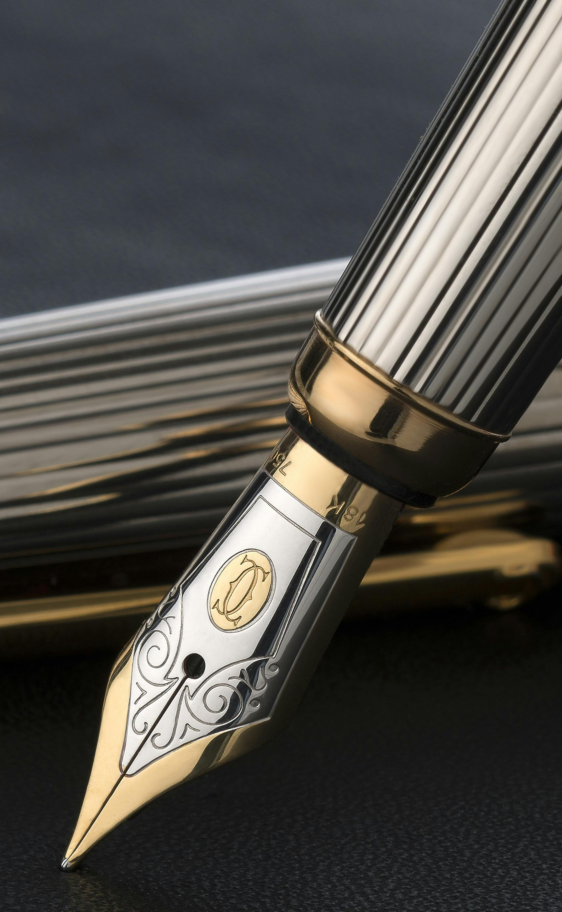
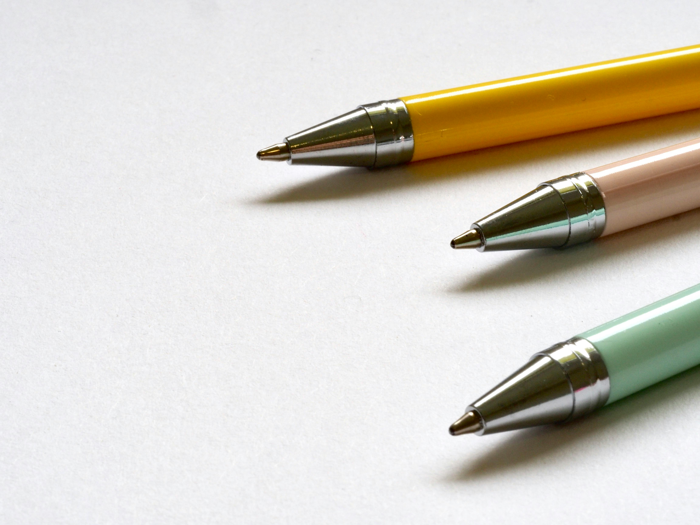
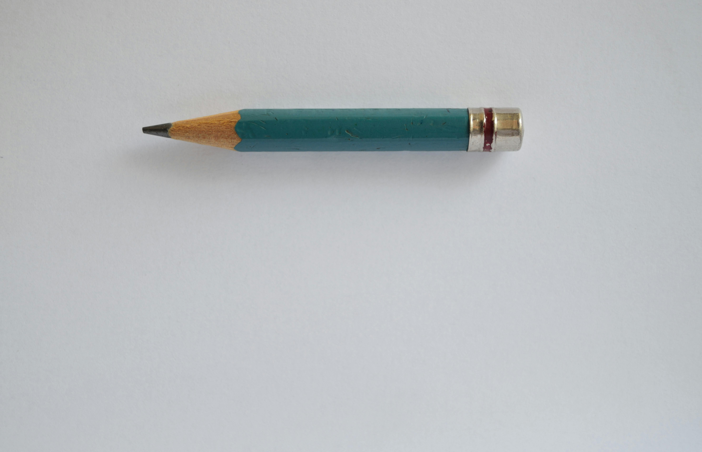

Explore Different Types of Pens
Welcome to Pen Testers! Here are some of the different types of pens you can explore:
Fountain Pens
Fountain pens are known for their elegance and smooth writing experience. They use liquid ink and can be refilled, making them a sustainable choice.
Ballpoint Pens
Ballpoint pens are the most common type of pen. They use a thick oil-based ink that dries quickly, making them ideal for everyday use.
Gel Pens
Gel pens use a water-based gel ink that provides a smooth writing experience and vibrant colors. They are perfect for artistic projects and detailed work.
Rollerball Pens
Rollerball pens use a water-based ink that flows more freely than ballpoint ink, offering a smoother writing experience. They are great for long writing sessions.